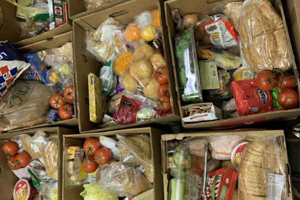

“Ayúdense unos a otros a llevar sus cargas, y así cumplirán la ley de Cristo.”
Gálatas 6:2 (NTV)
Ministerio Lucas 10
Semana a semana a través de este ministerio preparamos donaciones para familias en necesidad de dentro y fuera del contexto de nuestra comunidad. En el último año pudimos beneficiar a +36 familias siendo más de +160 personas beneficiadas. Puedes apoyar Lucas 10 a través de tus aportes o donaciones de víveres en nuestras reuniones de Domingo.
Para más información en cómo apoyar este ministerio, puedes contactarnos o dándole al botón de "Donar a Lucas 10", puedes poner algún monto que tú desees, y envías un comprobante a nuestro correo electrónico.
+36 familias beneficiadas
+160 personas beneficiadas
Datos del 2024.

Antecedentes
Desde nuestros inicios, Iglesia Gran Comisión Comayagua ha estado comprometida con el servicio a nuestra comunidad. El ministerio Lucas 10 nació de la visión de impactar directamente la vida de las personas, siguiendo el ejemplo de Jesús.
A lo largo de los años, hemos trabajado en diversas iniciativas, desde la distribución de alimentos y ropa hasta el apoyo en situaciones de crisis y la provisión de recursos educativos. Cada paso ha sido un testimonio de fe y dedicación, construyendo puentes y sembrando esperanza en los corazones de aquellos a quienes servimos.